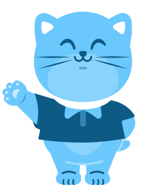

Unacademy · Summer UI Design Internship
Airlearn

Shipping 7–10 lessons a day across multiple different languages and scripts.
During a two-month summer internship at Unacademy, I turned educator scripts into production lesson screens for Airlearn—adapting Figma templates across Finnish, Korean, Mandarin, Russian, Greek, Tagalog, and Italian, and generating 1,111 visual aids in Midjourney 6.1.


- My role
- UI Design Intern
- Company / Product
- Unacademy / Airlearn
- Duration
- 2 months · Summer break
- Tools
- Figma & Midjourney 6.1
Role & Workflow
From raw educator script to approved lesson.
7–10lessons shipped / day
1,111Midjourney 6.1 images
used in lessons
I designed standard lesson screens for Airlearn, Unacademy’s language-learning app, in Greek, Finnish, Tagalog, Italian, and Korean. Most of my work was in Finnish and Korean.
Each day started with scripts from the language educators. I chose the Figma template for each exercise type, adjusted the layout for its text and writing system, and generated matching scenes in Midjourney 6.1. A usable image often took several prompt revisions and rerolls before I could crop it into the screen.
I worked through feedback from senior designers on UI and visual consistency, and from educators on linguistic and cultural accuracy. That loop—from script to review and approval—ran at 7–10 lessons a day, including work on the newer phone-call format in Russian, Mandarin, and Korean.
- Script
- Figma template adaptation
- Midjourney 6.1 visuals
- Educator & senior designer sign-off
Unacademy provided the base UI system and Figma templates; language educators wrote the scripts. I owned screen assembly, template adaptation across writing systems, and Midjourney visual generation.
Finnish Lessons
Full Finnish page (opens in a new tab)Finnish: Anchoring a lesson in one place.
I built lessons around everyday routines: visiting the market square, eating breakfast, finding items, and getting around.
For tori (market square), I carried one concept through three exercise types. The vocabulary card establishes the word, the image choices ask learners to distinguish a market from a park, and a longer note places it in Helsinki’s Kauppatori. Each layout needed a different balance of image area and reading space.
Pairing tori with a wide market-square scene where stalls and signage read clearly at mobile card size.

Pairing the market square against a park distractor so learners match the word by scene rather than memorising one card layout.

Adapting a text-heavy educator note on Helsinki’s Kauppatori with a waterfront stall illustration to break up reading density.
Korean Lessons
Full Korean page (opens in a new tab)Korean: Fitting Hangul, romanisation, and compound breakdowns.
The veterinary clinic unit meant fitting three text layers into one mobile screen: Hangul, romanisation, and English glosses.
I adapted lessons on 동물병원 (animal hospital), 이동장 (pet carrier), symptoms, and questions for the vet. Compound words also needed room for their component meanings. Within a fixed viewport height, I adjusted the text spacing and image crops so the explanations stayed readable without cramping the artwork.
Introducing 동물병원 (animal hospital) with a warm reception-desk interior that sets the scene for the rest of the unit.

Framing a tight subject crop for 이동장 (pet carrier) so the object reads immediately above the three-line phonetic stack.

Modifying the explanation template to split 동물 (animal) + 병원 (hospital) alongside an exam-room visual.
Phone-Call Format
Full sample page (opens in a new tab)Simulated phone calls in Mandarin, Russian, and Korean.
Phone-call lessons were one of Airlearn’s newer formats, pacing dialogue like a live call before moving into comprehension checks.
I built lessons in Russian, Mandarin, and Korean from educator scripts, using the product team’s master format flow as a structural reference. In these Mandarin examples, news, sports, and traffic scenarios needed clear speaker turns and pronunciation support that learners could follow while reading the conversation.

Latin-script pronunciation above Chinese characters, so learners can follow the call.

Adapting the same call template for a multi-turn sports conversation on relay and long-jump warmups.

Switching from live call UI to a comprehension prompt testing vocabulary from Lina and Jian’s traffic dialogue.
View the product team’s master phone-call spec (Spanish reference)
Unacademy’s core team established this four-stage interaction flow in Spanish: incoming call → live dialogue → comprehension → tile response. I used it as the structural reference when building Russian, Mandarin, and Korean lessons.


Midjourney 6.1 Visuals
1,111 final visuals used across lessons.
From the original render to a crop that works inside a lesson.

The wide source image leaves room to crop around the stalls for the tori card and its smaller multiple-choice tile.

The 4:3 reception interior becomes a shallow crop beneath 동물병원, keeping the desk and pet posters visible within the text-heavy screen.
Getting a usable image was often the production bottleneck.
Unacademy standardised on Midjourney 6.1 for lesson imagery. The older model frequently mangled hands, distorted store signage and other text, and struggled with prompts that needed several specific characters or objects in one scene.
At 7–10 lessons a day, I had to iterate quickly: rewriting prompts, rerolling, choosing camera angles that kept hands or readable text out of focus, and cropping intentionally in Figma. Educators checked the results for cultural and situational accuracy before approval. Because Midjourney outputs a 4-image grid per prompt, landing on 1,111 final lesson visuals meant generating and sifting through roughly 6–8× as many total variations over the two months.
Working with different subjects and source ratios.
Selected lesson images in their original square, 4:3, and 16:9 proportions.